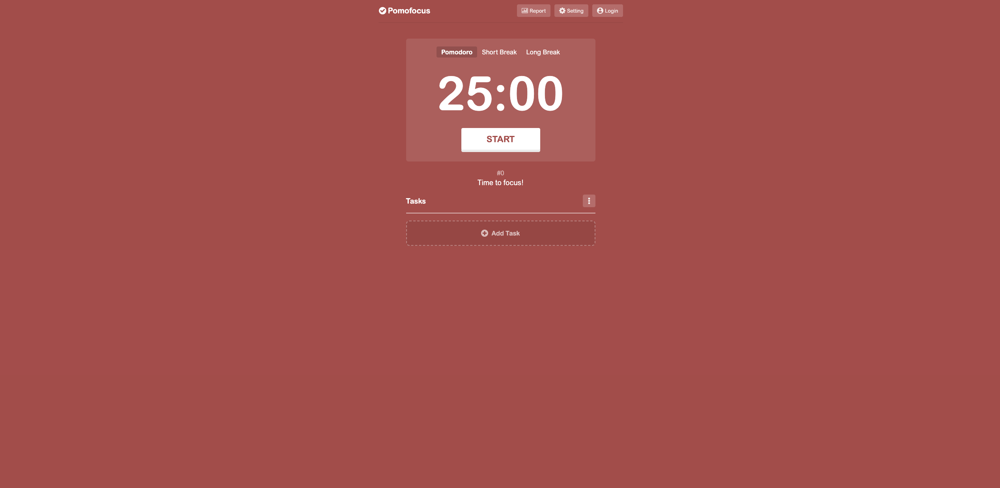
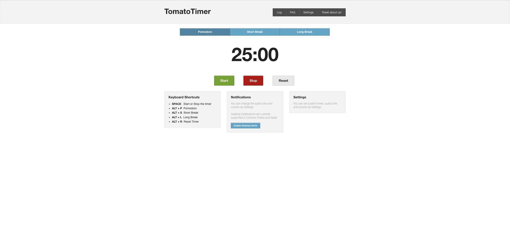

Agenda
The purpose of this meeting is to brainstorm ideas for what features our we want our pomodoro timer to include. We will first discuss the core features our timer must contain, and then move over to a conversation about extra features (add-ons) that would be cool to have and make the end user experience better. Participants are encouraged to go wild with their ideas as we are simply just trying to come up with some unique and interesting features to implement that would make our app stand out from the crowd. No ideas will be rejected in this meeting, but we will vote on ideas worth keeping in the next session.
Attendance List
The following persons were present during this meeting:
- Owen Huynh
- Sacha Heintze
- Kumaran Braun
- Elysia Vitali
- Ulderico Favreau
- Vienna Simon
- Steph Sung
- Sunitha Fleischer
- Tamara Seaver
- Rufus Lindquist
- Gouyen Ramsey
Unfinished Business
Kumaran Braun and Elysia Vitali are new additions to the team! Since they were not in attendance last week, we will start with their introductions before proceeding onto today's topics.
New Business
Today we discussed the features our pomodoro timer must have in order for the project to be considered successful. Note that anything beyond these agreed upon specifications (see Essentials below) are considered "icing on the cake" and should only be implemented if time permits.
Essentials:
- Timer must alternate between work and break sessions
- Work sessions should be 25 minutes long by default
- Break sessions should be 5 minutes long by default
- Every third break session should be 15 minutes long
- There must be a clear indicator for the time remaining in the current work/break session
- The user must be able to clearly tell whether they are currently in an active work or break session
- The user must be able to pause the timer in the middle of any session
- The user must be able to restart/stop the timer (restart the timer and clear history of current number of work/break sessions taken)
- The user must be alerted when the timer expires for the current work/break session
Add-ons
- Add ability to customize work/break session duration
- Add custom notification method (sound, text notification, etc)
- Add pomodoro timer history so users can track the number of pomodoro sessions completed
- Add custom UI to replace/accompany countdown timer
Questions & Concerns
Several questions regarding certain aspects of the project were brought up during this meeting. They have been listed below and are accompanied by their answers (if applicable).
Custom UI Design
Sacha Heintze: Regarding the custom UI, what might that look like?
Steph Sung: I have provided some renders of possible UI ideas before this meeting. Have a look at these. [The renders have been attached below]
 Role Assignment
Kumaran Braun: How are we going to divide up the work?
Owen Huynh: We will discuss who is responsible for what in the next meeting. Our plan is to match people with their area of expertise so that things can get started quickly.
Notification Sounds
Rufus Lindquis: What kind of notification sounds should we use to alert the user when the timer is up
Gouyen Ramsey: I have prepared some audio samples in advance. [The audio samples have been attached below]